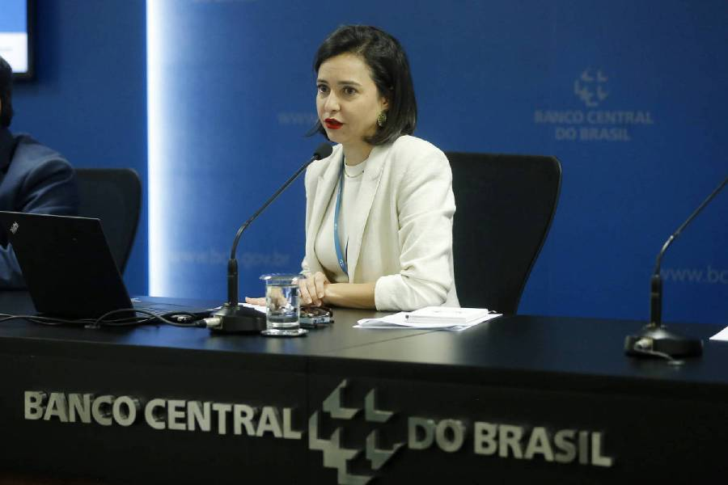

Inteligência Artificial
Banco Central alerta para uso de inteligência artificial por organizações criminosas no sistema financeiro
18/11/2026 às 04:56 (horário de Brasília)

A diretora de Relacionamento, Cidadania e Supervisão de Conduta do Banco Central, Izabela Corrêa, emitiu um alerta sobre o uso crescente de inteligência artificial por organizações criminosas para lavar dinheiro e driblar mecanismos de conformidade. A exposição foi realizada em São Paulo durante o 16º Congresso de Prevenção à Lavagem de Dinheiro e Financiamento ao Terrorismo, promovido pela Febraban.
De acordo com dados de investigações da Polícia Federal, as facções têm recorrido a deepfakes e adulteração de arquivos digitais para fraudar rotinas de autenticação biométrica, criar empresas fictícias e abrir contas em nome de intermediários (contas-laranja). Foram citadas infiltrações em negócios formais como postos de combustível e serviços públicos, além de movimentações do Primeiro Comando da Capital (PCC) envolvendo criptoativos como bitcoin e a stablecoin USDT, apuradas na Operação Carbono Oculto.
Diante dessas ameaças, o Banco Central e o Coaf estão desenvolvendo novas ferramentas e modelos automatizados de detecção de fraudes. As instituições bancárias, fintechs e corretoras de ativos virtuais terão prazos estipulados de adequação regulatória para aprimorar o monitoramento tecnológico e a troca de informações com os órgãos fiscalizadores.